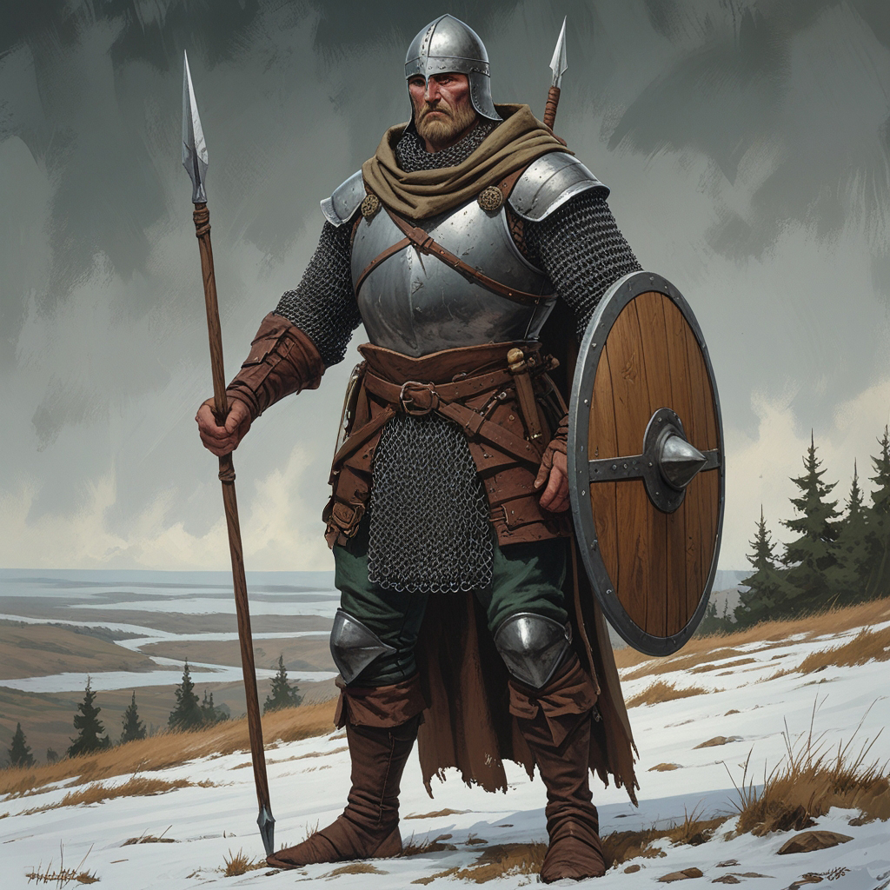

<div class="container">
            </img>
            <div class="content">
                <h1>Карточка персонажа — Харунд Торрикссон</h1>
                <div class="section">
                    <h2>Основная информация</h2>
                    <div class="section">
                        <p><strong>Класс:</strong> Дикарь (Savage)</p>
                        <p><strong>Предыстория:</strong> Бывший солдат-дезертир</p>
                        <p><strong>Мировоззрение:</strong> Нейтральный</p>
                        <p><strong>Раса:</strong> Человек (северянин)</p>
                        <p><strong>Уровень:</strong> 4</p>
                        <p><strong>Опыт:</strong> 3300</p>
                    </div>

                    <div class="section">
                        <div class="section-title"><h2>Характеристики</h2></div>
                        <div class="stats-grid">
                            <div class="stat"><p><strong>Сила:</strong> 16 (+3)</div>
                            <div class="stat"><p><strong>Ловкость:</strong> 14 (+2)</div>
                            <div class="stat"><p><strong>Телосложение:</strong> 15 (+2)</div>
                            <div class="stat"><p><strong>Интеллект:</strong> 10 (+0)</div>
                            <div class="stat"><p><strong>Мудрость:</strong> 13 (+1)</div>
                            <div class="stat"><p><strong>Харизма:</strong> 9 (-1)</div>
                            <br>
                            <div class="stat"><p><strong>Класс доспеха (КБ):</strong> 20 (Стальной нагрудник +4, Кольчужный хауберг +3, Щит +2, ловкость +0 для тежелых доспехов, +1 Укрепленный)</p></div>
                            <div class="stat"><p><strong>КЗ (HP):</strong> 32 (2-lvl-17, телосложение +2) 1-lvl-10, 2-lvl-4, 3-lvl-8, 4-lvl-8, телосложение +2)</p></div>
                            <div class="stat"><p><strong>Инициатива:</strong> +2</p></div>
                            <div class="stat"><p><strong>Скорость:</strong> 30 фт</p></div>
                            <div class="stat"><p><strong>Спасброски:</strong> Сила, Телосложение</p></div>
                        </div>
                        <br>

                        <div class="section">
                            <div class="section-title"><h3>Оружие</h3></div>
                            <ul>
                                <li><p><strong>Копьё с противовесом:</strong> 1d8 колющий (1-руч.) / 1d10 (2-руч.), +5 (сила +3, владение +2)</p></li>
                                <li><p><strong>Метательное копье (2):</strong> 1d6 колющий урон, +5 (сила +3 + владение +2), Дистанция: 20/60 футов</p></li>
                            </ul>
                        </div>

                        <div class="section">
                            <div class="section-title"><h3>Доп. снаряжение</h3></div>
                            <ul>
                                <li><p><strong>Набор путешественника</strong> (еда, вода, палатка, верёвка)</p></li>
                                <li><p><strong>Круглый щит, окованный железом +2 КБ</strong></p></li>
                                <li><p><strong>10 золотых монет</strong></p></li>
                                <li><p><strong>Сеть для ловли людей</strong> попытка опутать цель (спасбросок Ловкости против СЛ 13 +2 от владения), обездвижиывает цель и накладывает помеху на все атаки</p></li>
                            </ul>
                        </div>

                        <div class="section">
                            <div class="section-title"><h3>Доспехи</h3></div>
                            <ul>
                                <li><p><strong>Кольчужный хауберг:</strong> +3 к КБ, средняя защита</p></li>
                                <li><p><strong>Стальной нагрудник:</strong> +4 к КБ, тяжелая защита</p></li>
                                <li><p><strong>Северный стальной шлем:</strong> +1 против критов при попадании в голову (мастерская работа)</p></li>
                            </ul>
                        </div>

                        <div class="section">
                            <div class="section-title"><h3>Навыки</h3></div>
                            <ul>
                                <li><p><strong>Запугивание:</strong> +3</p></li>
                                <li><p><strong>Выживание:</strong> +4</p></li>
                                <li><p><strong>Внимательность:</strong> +4</p></li>
                                <li><p><strong>Атлетика:</strong> +5</p></li>
                            </ul>
                        </div>

                        <div class="section">
                            <div class="section-title"><h3>Черты характера</h3></div>
                            <p><strong>Положительные:</strong> Умеет выжидать добычу, держит слово, не из пугливых.</p>
                            <p><strong>Отрицательные:</strong> Нетерпим к трусам, склонный к одиночным действиям, легко переходит к силе, если слова не работают.</p>
                        </div>

                        <div class="section">
                            <h2>Особенности</h2>
                            <ul>
                                <li><p><strong><a href="https://lakisfilippidis.github.io/dnd.images/Classes/savage.html#fighting-styles">Укрепленный (Fortified)</a></strong></li>
                                <li><p><strong><a href="https://lakisfilippidis.github.io/dnd.images/Classes/savage.html#maneuver">Маневр (Maneuver)</a></strong></li>
                                <li><p><strong><a href="https://lakisfilippidis.github.io/dnd.images/Classes/savage.html#archetypes">Охотник за головами (Bounty Hunter)</strong> 4 уровень</a></li>
                                <p><strong>Дополнительная атака:</strong> можешь совершить две атаки в каждом ходу.</p>
                            </ul>
                        </div>
                    </div>
                </div>
            </div>
        </div>